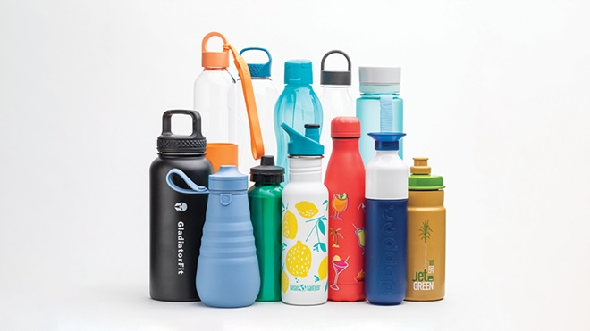
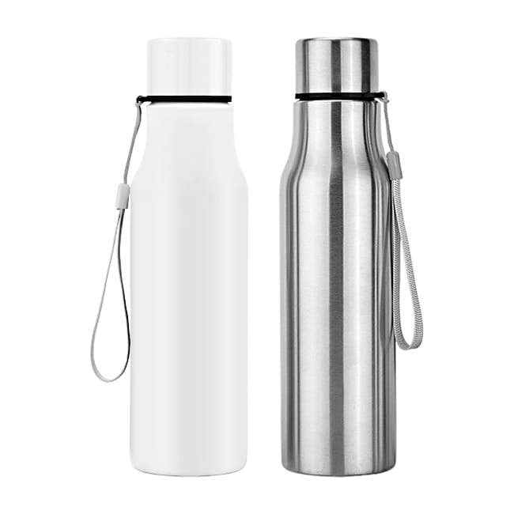
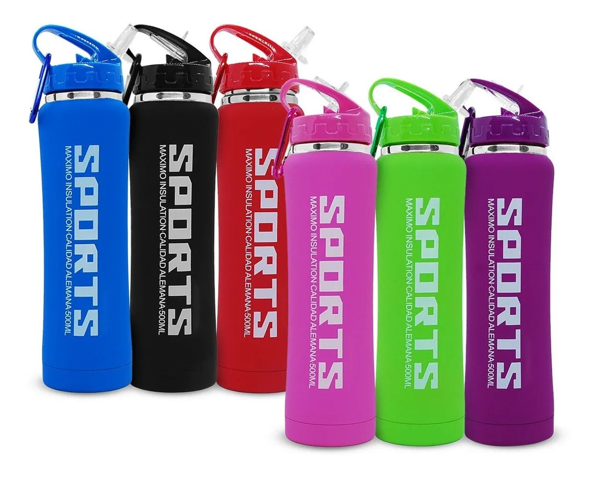
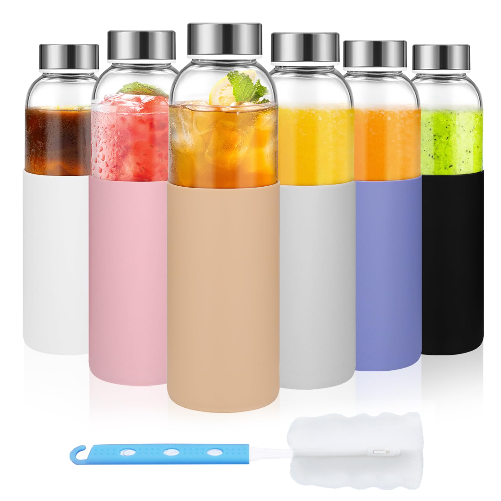

Evolución
Evolución de los Tomatodos
1. Inicios: Botellas de Vidrio (Siglo XIX - Mediados del Siglo XX)
Las primeras botellas reutilizables eran generalmente de vidrio. Eran pesadas y frágiles, lo que hacía que fueran incómodas para el transporte. Eran comunes en las casas para almacenar líquidos, especialmente antes de la invención de plásticos resistentes.
2. Introducción del Plástico: Botellas de Plástico Duro (Década de 1960 - 1980)
Con la invención de los plásticos duros como el polietileno, los tomatodos comenzaron a hacerse populares en el mercado. Eran más ligeros que las botellas de vidrio, más duraderos y menos costosos de producir.
3. Tomatodos Deportivos de Plástico Suave y PVC (Década de 1980 - 1990)
Se comenzaron a fabricar tomatodos para actividades deportivas y recreativas. Estos tomatodos estaban hechos de plástico flexible, lo que permitía un diseño ergonómico fácil de sujetar.
4. Era del Policarbonato y BPA: Innovación y Controversia (Década de 1990 - 2000)
El policarbonato se volvió un material popular para los tomatodos debido a su resistencia y claridad. Sin embargo, se descubrió que muchas de estas botellas contenían BPA, lo que generó preocupaciones de salud.
5. Auge del Tritán y Plásticos sin BPA (2000 - 2010)
En respuesta a las preocupaciones sobre el BPA, surgieron materiales alternativos como el Tritán, un plástico resistente, libre de BPA, y seguro para la salud.
6. Materiales Sostenibles: Acero Inoxidable y Vidrio Reforzado (2010 - Presente)
La conciencia ecológica impulsó el uso de materiales más sostenibles como el acero inoxidable y el vidrio reforzado. Los tomatodos modernos son reciclables y respetuosos con el medio ambiente.
7. Avances Tecnológicos y Funcionales (2020 - Presente)
Aparición de tomatodos con funciones tecnológicas, como sensores inteligentes para medir el consumo de agua o conectividad a aplicaciones móviles. Proliferación de modelos ecológicos fabricados con materiales reciclados o biodegradables.
Tendencias Actuales y Futuras
La tendencia hacia materiales sostenibles y el diseño ecológico continúa en aumento. Los consumidores buscan materiales libres de tóxicos y tomatodos que fomenten hábitos saludables de hidratación.
Tipos
1. Tomatodo de Acero Inoxidable
Los tomatodos de acero inoxidable son duraderos, mantienen las bebidas frías o calientes por más tiempo y son una opción ecológica. Son ideales para quienes buscan resistencia y estilo.
2. Tomatodo de Plástico Reciclado
.jpg)
Hechos con materiales reciclados, estos tomatodos son ligeros y eco-amigables. Son populares por su bajo costo y su capacidad para reducir el uso de plásticos nuevos.
3. Tomatodo Deportivo
Las botellas deportivas tienen diseños ergonómicos y son fáciles de usar durante actividades físicas. Están equipadas con boquillas para beber sin tener que quitar la tapa.
4. Tomatodo de Vidrio
Las botellas de vidrio son elegantes, no alteran el sabor del líquido y son fáciles de limpiar. Sin embargo, son más frágiles, por lo que suelen incluir una funda de silicona para mayor protección.
Video sobre Tipos de Tomatodos
Precios
1. Tomatodo de Acero Inoxidable
Bs 180.00
2. Tomatodo de Plástico Reciclado
Bs 90.00
3. Tomatodo Deportivo
Bs 130.00
4. Tomatodo de Vidrio
Bs 160.00